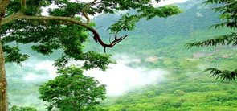

Hill stations are high-altitude towns for recreation, enjoyment and used as a place of refuge to escape the blistering heat in India during summertime. The hill stations are high-altitude towns used especially by the British as a place of refuge to escape the blistering summer heat and dust of plains during the British Raj. Hills are lower than mountains.
The hill stations are high-altitude towns used especially by the British as a place of refuge to escape the blistering summer heat and dust of plains during the British Raj. Hills are lower than mountains. They are prevalent in Southeast Asia and the Indian subcontinent, particularly in India
Ranikhet
Ranikhet is a hill station and cantonment town, near Almora Town in Almora district in the Indian state of Uttarakhand. It is the home of the Military Hospital,
Kumaon Regiment and Naga Regiment and is maintained by the Indian Army.
Ranikhet is at an altitude of 1,869 metres (6,132 ft) above sea level, within sight of the western peaks of the Himalayas. Ranikhet is a Class IV town with a civic status of a Cantonment board.
Estimate price:899-9999/-
Chail
Chail is a hill station in Solan district of Himachal Pradesh, India. It is 45 kilometres from Solan city and 44 kilometres from Shimla.
It is known for its salubrious beauty and virgin forests.Chail is also frequented by hikers as it offers wonderful views of the lower Himalayas. It has good trekking points from Junga, Kufri and Ashwani Khad at Solan. Many Eco camps are held here. There are many camping sites for campers and hikers,
so camping in Chail is most sought after activity for enthusiasts.
Estimate price:399-5999/-
Darjeeling
Darjeeling has two major arterial roads. Hill Cart Road—which is a continuation of National Highway 110 connecting Siliguri at the base of the Darjeeling hills to Darjeeling—and Lebong Cart Road .
The average width of Darjeeling's roads in 2018 was between 6 metres (20 ft) and 7 metres .Darjeeling's population today is constituted largely of the descendants of the indigenous and immigrant labourers that were employed in the original development of the town. Although their common language, the Nepali language,
has been given official recognition at the state and federal levels in India.
Estimate price:999-7999/-
Gangtok
Gangtok is a city, municipality, the capital and the most populous city of the Indian state of Sikkim. It is also the headquarters of the Gangtok District.
Gangtok is in the eastern Himalayan range, at an elevation of 1,650 m.Gangtok rose to prominence as a popular Buddhist pilgrimage site after the construction of the Enchey Monastery in 1840. In 1894, the ruling Sikkimese Chogyal, Thutob Namgyal, transferred the capital to Gangtok. In the early 20th century, Gangtok became a major stopover on the trade route between Lhasa in Tibet and cities such as Kolkata (then Calcutta) in British India.
After India won its independence from the British Empire in 1947.
Estimate price:699-8999/-
Mount abu
Mount Abu is a hill station in the Aravalli Range in Sirohi district of the state of Rajasthan in western India. The mountain forms a rocky plateau 22 km long by 9 km wide.
The highest peak on the mountain is Guru Shikhar at 1,722 m (5,650 ft) above sea level.
Serving as a source of comfort from the sultry dessert climate of Rajasthan, Mount Abu, the state's only hill station stands at a height of 1722 metres above sea level, and is embraced by lush green hills of the Aravalli range.
Estimate price:499-5999/-
Araku valley

Araku is located in the Eastern Ghats about 114 kilometres from Visakhapatnam, close to the Odisha state border. The Anantagiri and Sunkarimetta Reserved Forest, which are part of Araku Valley, are rich in biodiversity and are mined for bauxite.[2] Galikonda hill rising to a height of 5,000 feet (1,500 m) is amongst the highest peaks in Andhra Pradesh.
The average rainfall is 1,700 millimetres .rainfall is 1,700 millimetres.
the bulk of which is received during June–October.The altitude is about 1300 m above the sea level. The valley spreads around 36 km.
Estimate price:299-4999/-
Ananthagiri hills

Ananthagiri Hills is located in Vikarabad district, Telangana, India. The water flows from these hills to Osman Sagar, also known as Gandipet lake,it is one of the dense forests in Telangana. Ananthagiri Temple is located in this forested area.
It is the birthplace of Musi river, also called as Muchkunda River,It is considered as one of the dense forests in Telangana region. Ananthagiri has a famous temple located in this forested region, which is also the birthplace of Musi River. It is situated at a distance of about 90 km from Hyderabad City and a popular destination for trekking and for those who love adventure.
Estimate price:4999-8999/-
Coonoor
Coonoor, natively spelt as Kunnur, is a Taluk and a municipality of the Nilgiris district in the Indian State of Tamil Nadu.
As of 2011, the town had a population of 45,494.Coonoor is a Taluk headquarters, responsible for six Panchayat villages, namely, Bandishola, Bearhatty, Burliar, Hubbathalai, Melur and Yedapalli. The Coonoor block contains the revenue villages of Adigaratty, Burliar, Coonoor Town, Yedapalli, Hubbathalai, Hullickal, Ketti, Melur. Coonoor assembly constituency is part of Nilgiris.
Estimate price:899-2000/-
coorag
Kodagu district (also known by its former name Coorg) is an administrative district in the Karnataka state of India. Before 1956, it was an administratively separate Coorg State,[3] at which point it was merged into an enlarged Mysore State.
It occupies an area of 4,102 square kilometres (1,584 sq mi) in the Western Ghats of southwestern Karnataka. In 2001 its population was 548,561, 13.74% of which resided in the district's urban centre.
Estimate price:1000-7999/-
Idukki
Idukki is one of the 14 districts in the Indian state of Kerala.dukki district lies amid the Cardamom Hills of Western Ghats in Kerala. Idukki district contains two municipal towns - Kattappana and Thodupuzha.
The district currently includes five taluks in itThe district was constituted on 26 January 1972, by taking Peerumade, Udumbanchola, Devikulam taluks of the former High Range division from Kottayam district and the Thodupuzha taluk from Ernakulam district.
Estimate price:999-9999/-
Khandala
Kandla, also known as the Deendayal Port Trust (Gujarati: કંડલા) is a seaport in Kutch District of Gujarat state in western India, near the city of Gandhidham. Located on the Gulf of Kutch, it is one of major ports on west coast.
Deendayal Port's journey began in 1931 with construction of RCC Jetty by Maharao Khengarji. After partition, Deendayal Port's success story has continued and it rise to the No. 1 Port in India in the year 200.
Estimate price:7099-9999/-
Sonamrag
Sonamarg, which means ‘meadow of gold’ has, as its backdrop,
snowy mountains against a cerulean sky. The Sindh meanders along here and abounds with trout and mahseer, snow trout can be caught in the main river. In late April when Sonamarg is open for road transport, the visitors can have access to snow which is furnished all over like a white carpet.